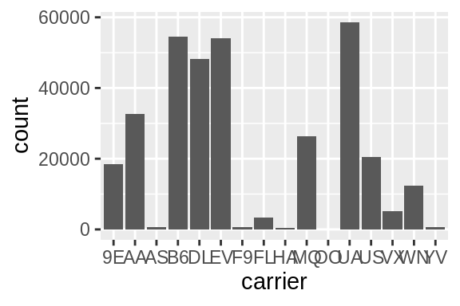
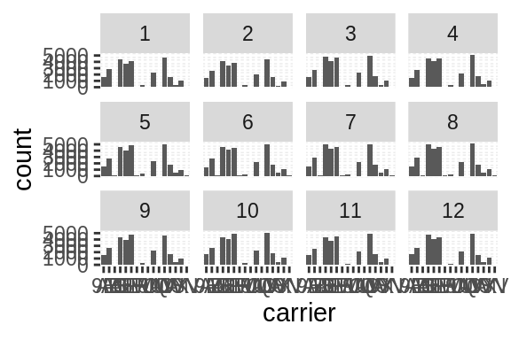
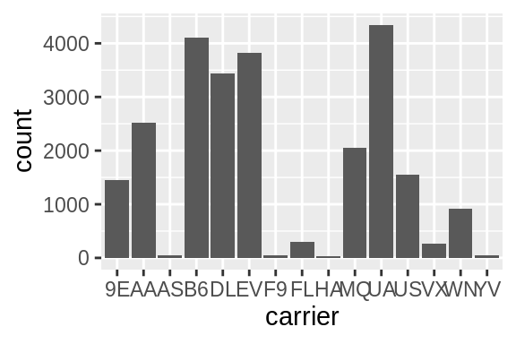
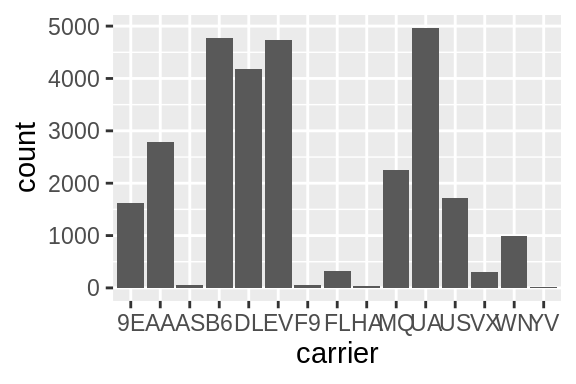
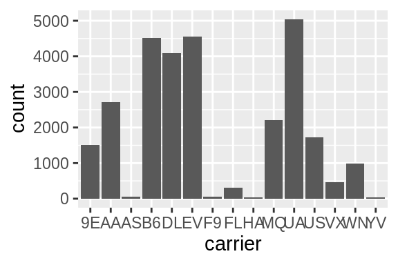
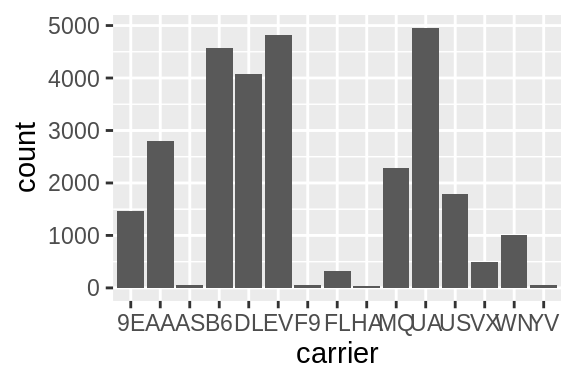
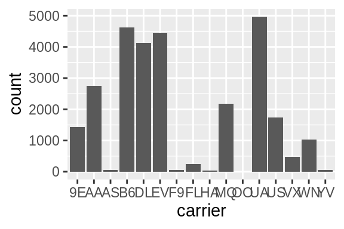
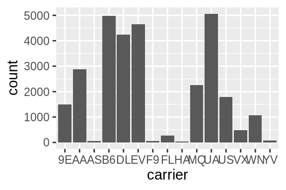
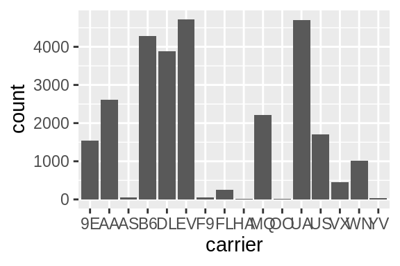
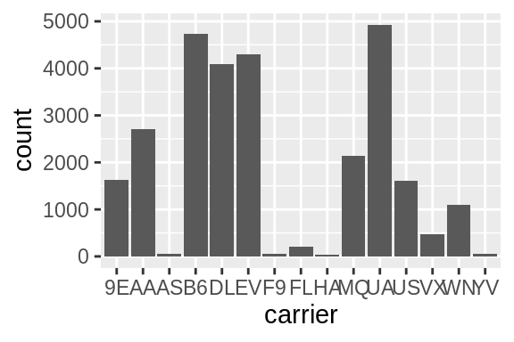

3 Transformation
Using a consistent grammar of data manipulation.
This chapter discusses data transformation with the dplyr package.
3.1 Package: {conflicted}
Click here to show setup code.
## [conflicted] Will prefer [34mdplyr::filter[39m over any other packageThis section is dedicated to show you the basic building blocks (i.e. functions) of data analysis in R within the {tidyverse}. The package providing these is {dplyr}.
Before starting, we would like to mention the package {conflicted}, which when loaded, will help detecting functions of the same name from different packages (an error is thrown in case of such situations).
It furthermore helps to resolve these situations, by allowing you to choose, the function of which package you prefer (conflicted::conflict_prefer()).
You can see an example in the setup code.
Last time we stopped with facet-plots, e.g. like this one here:
my_mpg <- mpg
ggplot(
data = mpg,
mapping = aes(x = displ, y = hwy)
) +
geom_point() +
facet_grid(year ~ drv)
3.2 Filtering: dplyr::filter()
Click here to show setup code.
## [conflicted] Removing existing preference## [conflicted] Will prefer [34mdplyr::filter[39m over any other packageDuring this lecture we will be working with data from the package {nycflights13}, which contains flights in the year 2013 with their departure in New York City (airports: JFK, LGA or EWR) to destinations in the United States, Puerto Rico, and the American Virgin Islands.
## # A tibble: 336,776 x 19
## year month day dep_time sched_dep_time dep_delay arr_time sched_arr_time
## <int> <int> <int> <int> <int> <dbl> <int> <int>
## 1 2013 1 1 517 515 2 830 819
## 2 2013 1 1 533 529 4 850 830
## 3 2013 1 1 542 540 2 923 850
## # … with 3.368e+05 more rows, and 11 more variables: arr_delay <dbl>,
## # carrier <chr>, flight <int>, tailnum <chr>, origin <chr>, dest <chr>,
## # air_time <dbl>, distance <dbl>, hour <dbl>, minute <dbl>, time_hour <dttm>
The function dplyr::filter() helps you to reduce your dataset to the observations (rows) of interest.
The filter condition can use any of the dataset’s variables and needs to be a logical expression.
## # A tibble: 8,730 x 19
## year month day dep_time sched_dep_time dep_delay arr_time sched_arr_time
## <int> <int> <int> <int> <int> <dbl> <int> <int>
## 1 2013 1 1 517 515 2 830 819
## 2 2013 1 1 533 529 4 850 830
## 3 2013 1 1 542 540 2 923 850
## # … with 8,727 more rows, and 11 more variables: arr_delay <dbl>,
## # carrier <chr>, flight <int>, tailnum <chr>, origin <chr>, dest <chr>,
## # air_time <dbl>, distance <dbl>, hour <dbl>, minute <dbl>, time_hour <dttm>
If you use one or more variables of the dataset in the filter condition, a vectorized evaluation of the condition is taking place. Generally you can provide any logical vector with a length equal to the number of rows (or alternatively equal to 1, if you want to keep/drop all rows).
## # A tibble: 8,255 x 19
## year month day dep_time sched_dep_time dep_delay arr_time sched_arr_time
## <int> <int> <int> <int> <int> <dbl> <int> <int>
## 1 2013 1 1 NA 1630 NA NA 1815
## 2 2013 1 1 NA 1935 NA NA 2240
## 3 2013 1 1 NA 1500 NA NA 1825
## # … with 8,252 more rows, and 11 more variables: arr_delay <dbl>,
## # carrier <chr>, flight <int>, tailnum <chr>, origin <chr>, dest <chr>,
## # air_time <dbl>, distance <dbl>, hour <dbl>, minute <dbl>, time_hour <dttm>
3.3 Sort rows: dplyr::arrange()
Click here to show setup code.
## [conflicted] Removing existing preference## [conflicted] Will prefer [34mdplyr::filter[39m over any other packageNote: In all of today’s scripts, the function tibble::view() is redefined.
It normally let’s you browse through a dataset in a newly opened window.
For our purposes, working with markdown, we are replacing view() with I(), which makes sure that what comes in also comes out.
The function dplyr::arrange() sorts the rows of the dataset according to the values of the variable(s) you are providing.
## # A tibble: 336,776 x 19
## year month day dep_time sched_dep_time dep_delay arr_time sched_arr_time
## <int> <int> <int> <int> <int> <dbl> <int> <int>
## 1 2013 1 13 1 2249 72 108 2357
## 2 2013 1 31 1 2100 181 124 2225
## 3 2013 11 13 1 2359 2 442 440
## # … with 3.368e+05 more rows, and 11 more variables: arr_delay <dbl>,
## # carrier <chr>, flight <int>, tailnum <chr>, origin <chr>, dest <chr>,
## # air_time <dbl>, distance <dbl>, hour <dbl>, minute <dbl>, time_hour <dttm>
When providing multiple variables as arguments in the ... parameter (AKA ellipsis), the dataset is first sorted accorcing to the values of the first variable.
Wherever these values occur more than once, another sorting takes place within those groups, according to the second variable you provided.
The same rule applies for every further variable you add to arrange().
## # A tibble: 336,776 x 19
## year month day dep_time sched_dep_time dep_delay arr_time sched_arr_time
## <int> <int> <int> <int> <int> <dbl> <int> <int>
## 1 2013 11 13 1 2359 2 442 440
## 2 2013 12 16 1 2359 2 447 437
## 3 2013 12 20 1 2359 2 430 440
## # … with 3.368e+05 more rows, and 11 more variables: arr_delay <dbl>,
## # carrier <chr>, flight <int>, tailnum <chr>, origin <chr>, dest <chr>,
## # air_time <dbl>, distance <dbl>, hour <dbl>, minute <dbl>, time_hour <dttm>
Look at the data with view():
You can combine filter() and arrange() (they even commute, though it seems more natural to first filter and then arrange).
…add one more filter:
flights %>%
filter(dep_time < 600) %>%
filter(month >= 10) %>%
arrange(dep_time, dep_delay) %>%
view()You can use arrange() with arbitrary expressions.
The reason for the result you just saw in the view of the filtered dataset is, that the binary result of the expression (TRUE, FALSE) is sorted FALSE-first (lexicographically).
Let’s give it a twist:
## # A tibble: 28,330 x 19
## year month day dep_time sched_dep_time dep_delay arr_time sched_arr_time
## <int> <int> <int> <int> <int> <dbl> <int> <int>
## 1 2013 4 1 NA 1125 NA NA 1327
## 2 2013 4 1 NA 1545 NA NA 1909
## 3 2013 4 1 NA 850 NA NA 1035
## # … with 2.833e+04 more rows, and 11 more variables: arr_delay <dbl>,
## # carrier <chr>, flight <int>, tailnum <chr>, origin <chr>, dest <chr>,
## # air_time <dbl>, distance <dbl>, hour <dbl>, minute <dbl>, time_hour <dttm>
Add another filter to further reduce the dataset and make it easier to handle:
Sorting the dataset according to which flights arrived earliest on April 1, 2013:
Invert the sorting by either…
… or:
You can mix sorting in an ascending and a descending manner:
3.4 The pipe
Click here to show setup code.
## [conflicted] Removing existing preference## [conflicted] Will prefer [34mdplyr::filter[39m over any other packageWe already heavily used it today, but what exactly are the characteristics of %>%, better known as “the pipe�
The above is just another way of writing:
The manual describes this operator in detail:
With the pipe, code can be read in a natural way, from left to right. The following snippet extracts
- all early flights
- from October till December,
- ordered by departure time and then departure delay
- and displays it.
Note how the reading corresponds to the code.
flights %>%
filter(dep_time < 600) %>%
filter(month >= 10) %>%
arrange(dep_time, dep_delay) %>%
view()This is possible, because all transformation verbs (filter(), arrange(), view()) accept the main input (a tibble) as the first argument and also return a tibble.
The following three codes are equivalent, but are more difficult to write, to read and to maintain.
Naming is hard. Trying to give each intermediate result a name is exhausting. Introducing an additional step in this sequence of operations is prone to errors.
early_flights <- filter(flights, dep_time < 600)
early_flights_oct_dec <- filter(early_flights, month >= 10)
early_flights_oct_dec_sorted <- arrange(early_flights_oct_dec, dep_time, dep_delay)
view(early_flights_oct_dec_sorted)We can keep using the same variable, e.g. x, to avoid naming.
This adds noise compared to the pipe.
x <- flights
x <- filter(x, dep_time < 600)
x <- filter(x, month >= 10)
x <- arrange(x, dep_time, dep_delay)
view(x)We can avoid intermediate variables. This disconnects the verbs from their arguments and is very difficult to read.
3.4.1 Further advantages
When working on a code chunk consisting of subsequent transformations connected by pipes, it can be useful to end the pipeline with either I or view().
## # A tibble: 1,894 x 19
## year month day dep_time sched_dep_time dep_delay arr_time sched_arr_time
## * <int> <int> <int> <int> <int> <dbl> <int> <int>
## 1 2013 10 1 447 500 -13 614 648
## 2 2013 10 1 522 517 5 735 757
## 3 2013 10 1 536 545 -9 809 855
## # … with 1,891 more rows, and 11 more variables: arr_delay <dbl>,
## # carrier <chr>, flight <int>, tailnum <chr>, origin <chr>, dest <chr>,
## # air_time <dbl>, distance <dbl>, hour <dbl>, minute <dbl>, time_hour <dttm>
Once the chunk does what you expect it to do, do not forget to remove the I or view() call.
## Error in arrange(dep_time, dep_delay) : object 'dep_time' not foundTo rearrange rows, you can use the shortcut Alt + Cursor up/down.
In a piped expression, no further editing is necessary!
3.5 Pick columns: dplyr::select()
Click here to show setup code.
## [conflicted] Removing existing preference## [conflicted] Will prefer [34mdplyr::filter[39m over any other packageWith dplyr::select() you can (de-)select and/or rename columns of your dataset.
The basic operation is like in the following examples:
## # A tibble: 336,776 x 3
## year month day
## <int> <int> <int>
## 1 2013 1 1
## 2 2013 1 1
## 3 2013 1 1
## # … with 3.368e+05 more rows
## # A tibble: 336,776 x 1
## year
## <int>
## 1 2013
## 2 2013
## 3 2013
## # … with 3.368e+05 more rows
## # A tibble: 336,776 x 5
## year month day dep_delay arr_delay
## <int> <int> <int> <dbl> <dbl>
## 1 2013 1 1 2 11
## 2 2013 1 1 4 20
## 3 2013 1 1 2 33
## # … with 3.368e+05 more rows
Renaming works by addressing an existing column on the right hand side of an equality sign and providing the new name of the column on its left hand side.
## # A tibble: 336,776 x 5
## year month day departure_delay arrival_delay
## <int> <int> <int> <dbl> <dbl>
## 1 2013 1 1 2 11
## 2 2013 1 1 4 20
## 3 2013 1 1 2 33
## # … with 3.368e+05 more rows
If you want to use “strange†column names, put them in between backticks:
flights_with_spaces <-
flights %>%
select(
year, month, day,
`Departure delay` = dep_delay,
`Arrival delay` = arr_delay
) %>%
filter(
`Arrival delay` < 0
)Address them in the same way, if the dataset already has such variables:
flights_with_spaces %>%
select(
year, month, day,
dep_delay = `Departure delay`,
arr_delay = `Arrival delay`
)## # A tibble: 188,933 x 5
## year month day dep_delay arr_delay
## <int> <int> <int> <dbl> <dbl>
## 1 2013 1 1 -1 -18
## 2 2013 1 1 -6 -25
## 3 2013 1 1 -3 -14
## # … with 1.889e+05 more rows
3.6 Create new columns based on old ones: dplyr::mutate()
Click here to show setup code.
## [conflicted] Removing existing preference## [conflicted] Will prefer [34mdplyr::filter[39m over any other package## [conflicted] Will prefer [34mdplyr::lag[39m over any other packageWith dplyr::mutate() you can add new columns to a table, e.g. making use of the already existing variables.
How much faster than the scheduled time did the pilots manage to fly:
## # A tibble: 336,776 x 20
## year month day dep_time sched_dep_time dep_delay arr_time sched_arr_time
## <int> <int> <int> <int> <int> <dbl> <int> <int>
## 1 2013 1 1 517 515 2 830 819
## 2 2013 1 1 533 529 4 850 830
## 3 2013 1 1 542 540 2 923 850
## # … with 3.368e+05 more rows, and 12 more variables: arr_delay <dbl>,
## # carrier <chr>, flight <int>, tailnum <chr>, origin <chr>, dest <chr>,
## # air_time <dbl>, distance <dbl>, hour <dbl>, minute <dbl>, time_hour <dttm>,
## # recovery <dbl>
This is another building block added to the toolset:
## # A tibble: 336,776 x 3
## dep_delay arr_delay recovery
## <dbl> <dbl> <dbl>
## 1 2 11 -9
## 2 4 20 -16
## 3 2 33 -31
## # … with 3.368e+05 more rows
Work with the newly created variable just like with the original ones:
flights %>%
mutate(recovery = dep_delay - arr_delay) %>%
select(dep_delay, arr_delay, recovery) %>%
arrange(recovery)## # A tibble: 336,776 x 3
## dep_delay arr_delay recovery
## <dbl> <dbl> <dbl>
## 1 -2 194 -196
## 2 -2 179 -181
## 3 180 345 -165
## # … with 3.368e+05 more rows
Assign the results to new variables. The old ones remain unchanged.
recovery_data <-
flights %>%
mutate(recovery = dep_delay - arr_delay) %>%
select(dep_delay, arr_delay, recovery) %>%
arrange(recovery)
recovery_data## # A tibble: 336,776 x 3
## dep_delay arr_delay recovery
## <dbl> <dbl> <dbl>
## 1 -2 194 -196
## 2 -2 179 -181
## 3 180 345 -165
## # … with 3.368e+05 more rows
Let’s look at a single airplane:
Adding the departure time of the next flight to the current row, respectively, using mutate() with lead():
flights %>%
filter(tailnum == "N14228") %>%
select(year, month, day, dep_time, arr_time) %>%
mutate(lead_dep_time = lead(dep_time)) %>%
view()The opposite effect to lead() can be realized using lag():
flights %>%
filter(tailnum == "N14228") %>%
select(year, month, day, dep_time, arr_time) %>%
mutate(lag_arr_time = lag(arr_time)) %>%
view()There is even a use-case for this in our little example. How long has our airplane been absent from NYC airports between each of its flights out?
flights %>%
filter(tailnum == "N14228") %>%
select(year, month, day, dep_time, arr_time) %>%
mutate(lag_arr_time = lag(arr_time)) %>%
mutate(ground_time = dep_time - lag_arr_time) %>%
view()The negative values occur because not everything happens on the same day, implying that our method is still in need of some refinement. Nevertheless, let’s continue.
A frequently used workflow is creating a helper variable at some point in the pipeline and then dropping it later on:
flights %>%
filter(tailnum == "N14228") %>%
select(year, month, day, dep_time, arr_time) %>%
mutate(lag_arr_time = lag(arr_time)) %>%
mutate(ground_time = dep_time - lag_arr_time) %>%
select(-lag_arr_time)## # A tibble: 111 x 6
## year month day dep_time arr_time ground_time
## <int> <int> <int> <int> <int> <int>
## 1 2013 1 1 517 830 NA
## 2 2013 1 8 1435 1717 605
## 3 2013 1 9 717 812 -1000
## # … with 108 more rows
Let’s work some more with the flight data of our special plane.
The total air time of a plane up to and including a given flight can be calculated with base::cumsum():
flights %>%
filter(tailnum == "N14228") %>%
mutate(cum_air_time = cumsum(air_time)) %>%
select(air_time, cum_air_time) %>%
view()Creating a “flag†variable with mutate() which shows if a flight was on time or not:
flights %>%
filter(tailnum == "N14228") %>%
mutate(delayed = if_else(arr_delay > 0, "delayed", "on time")) %>%
select(arr_delay, delayed)## # A tibble: 111 x 2
## arr_delay delayed
## <dbl> <chr>
## 1 11 delayed
## 2 -29 on time
## 3 -3 on time
## # … with 108 more rows
A more straightforward way to get the same (or at least a very similar and probably easier to work with) result:
flights %>%
filter(tailnum == "N14228") %>%
mutate(delayed = arr_delay > 0) %>%
select(arr_delay, delayed)## # A tibble: 111 x 2
## arr_delay delayed
## <dbl> <lgl>
## 1 11 TRUE
## 2 -29 FALSE
## 3 -3 FALSE
## # … with 108 more rows
… easier to work with, because filter() can directly take logical arguments:
flights %>%
filter(tailnum == "N14228") %>%
mutate(delayed = arr_delay > 0) %>%
select(arr_delay, delayed) %>%
filter(delayed)## # A tibble: 39 x 2
## arr_delay delayed
## <dbl> <lgl>
## 1 11 TRUE
## 2 39 TRUE
## 3 54 TRUE
## # … with 36 more rows
Negation for inverse filtering:
flights %>%
filter(tailnum == "N14228") %>%
mutate(delayed = arr_delay > 0) %>%
select(arr_delay, delayed) %>%
filter(!delayed)## # A tibble: 72 x 2
## arr_delay delayed
## <dbl> <lgl>
## 1 -29 FALSE
## 2 -3 FALSE
## 3 -20 FALSE
## # … with 69 more rows
These are the flights that had no delay:
3.7 Summarize data (by groups): dplyr::summarize(), dplyr::count(), dplyr::group_by()
Click here to show setup code.
## [conflicted] Removing existing preference## [conflicted] Will prefer [34mdplyr::filter[39m over any other package## [conflicted] Removing existing preference## [conflicted] Will prefer [34mdplyr::lag[39m over any other packageOften we want to draw just conclusions from larger datasets by gaining insight by using statistical (or other) methods for summarizing – and thus drastically reducing – the data:
## # A tibble: 1 x 1
## n
## <int>
## 1 336776
## # A tibble: 1 x 1
## n
## <int>
## 1 336776
dplyr::count() produces results that are frequently of interest, and has a straightforward syntax in these cases.
dplyr::summarize() is more flexible though.
Both functions can work with grouped data.
For count() the grouping variable(s) can be used directly as input parameters for the ellipsis.
If you assign the parameter wt (weight) a variable, the respective variable will be summed up within the given groups.
## # A tibble: 3 x 2
## origin n
## <chr> <int>
## 1 EWR 120835
## 2 JFK 111279
## 3 LGA 104662
## # A tibble: 3 x 2
## origin n
## <chr> <dbl>
## 1 EWR 17955572
## 2 JFK 19454136
## 3 LGA 11916902
## # A tibble: 365 x 4
## year month day n
## <int> <int> <int> <int>
## 1 2013 1 1 842
## 2 2013 1 2 943
## 3 2013 1 3 914
## # … with 362 more rows
Weighted, ungrouped counts:
## # A tibble: 1 x 1
## n
## <dbl>
## 1 49326610
## # A tibble: 1 x 1
## n
## <dbl>
## 1 49326610
As mentioned, summarize() is more flexible.
It can use all sorts of summarizing functions, that turn a vector of values into one value as a result.
## # A tibble: 1 x 1
## n
## <dbl>
## 1 129
It’s possible to produce two different summarizations at once:
flights %>%
summarize(
mean_air_time = mean(air_time, na.rm = TRUE),
median_air_time = median(air_time, na.rm = TRUE)
)## # A tibble: 1 x 2
## mean_air_time median_air_time
## <dbl> <dbl>
## 1 151. 129
…and also grouped summarizations, using dplyr::group_by() beforehand:
flights %>%
group_by(origin) %>%
summarize(
mean_air_time = mean(air_time, na.rm = TRUE),
median_air_time = median(air_time, na.rm = TRUE)
)## # A tibble: 3 x 3
## origin mean_air_time median_air_time
## <chr> <dbl> <dbl>
## 1 EWR 153. 130
## 2 JFK 178. 149
## 3 LGA 118. 115
Chosing different groups completely changes the result and its meaning:
flights %>%
group_by(year, month, day) %>%
summarize(
mean_air_time = mean(air_time, na.rm = TRUE),
median_air_time = median(air_time, na.rm = TRUE)
)## # A tibble: 365 x 5
## # Groups: year, month [12]
## year month day mean_air_time median_air_time
## <int> <int> <int> <dbl> <dbl>
## 1 2013 1 1 170. 149
## 2 2013 1 2 162. 148
## 3 2013 1 3 157. 148
## # … with 362 more rows
You might have noticed, that after the summarization the tibbles still know how they are grouped.
This is intentional, but it might lead to unintended effects if it is ignored.
Best-practice is to use ungroup() after a summarization, using the pattern:
group_by() – summarize() – ungroup().
flights %>%
group_by(origin) %>%
summarize(
mean_air_time = mean(air_time, na.rm = TRUE),
median_air_time = median(air_time, na.rm = TRUE)
) %>%
ungroup()## # A tibble: 3 x 3
## origin mean_air_time median_air_time
## <chr> <dbl> <dbl>
## 1 EWR 153. 130
## 2 JFK 178. 149
## 3 LGA 118. 115
Same example with different groups:
flights %>%
group_by(year, month, day) %>%
summarize(
mean_air_time = mean(air_time, na.rm = TRUE),
median_air_time = median(air_time, na.rm = TRUE)
) %>%
ungroup()## # A tibble: 365 x 5
## year month day mean_air_time median_air_time
## <int> <int> <int> <dbl> <dbl>
## 1 2013 1 1 170. 149
## 2 2013 1 2 162. 148
## 3 2013 1 3 157. 148
## # … with 362 more rows
Same example without explicitly giving the names for the summarized values:
flights %>%
group_by(year, month, day) %>%
summarize(
mean(air_time, na.rm = TRUE),
median(air_time, na.rm = TRUE)
) %>%
ungroup()## # A tibble: 365 x 5
## year month day `mean(air_time, na.rm = TRUE… `median(air_time, na.rm = TRU…
## <int> <int> <int> <dbl> <dbl>
## 1 2013 1 1 170. 149
## 2 2013 1 2 162. 148
## 3 2013 1 3 157. 148
## # … with 362 more rows
Assign the result of a summarization to a new variable and continue working with it:
flights_by_day <-
flights %>%
group_by(year, month, day) %>%
summarize(
mean_air_time = mean(air_time, na.rm = TRUE),
median_air_time = median(air_time, na.rm = TRUE)
) %>%
ungroup()
flights_by_day## # A tibble: 365 x 5
## year month day mean_air_time median_air_time
## <int> <int> <int> <dbl> <dbl>
## 1 2013 1 1 170. 149
## 2 2013 1 2 162. 148
## 3 2013 1 3 157. 148
## # … with 362 more rows
How much air time per carrier?
total_airtime_by_carrier <-
flights %>%
group_by(carrier) %>%
summarize(acc_air_time = sum(air_time, na.rm = TRUE)) %>%
ungroup()Sorted…
## # A tibble: 16 x 2
## carrier acc_air_time
## <chr> <dbl>
## 1 OO 2421
## 2 YV 35763
## 3 F9 156357
## # … with 13 more rows
Change class of variable carrier to factor, with a level order just as the levels occur in the tibble:
## # A tibble: 16 x 2
## carrier acc_air_time
## <fct> <dbl>
## 1 OO 2421
## 2 YV 35763
## 3 F9 156357
## # … with 13 more rows
Plotting without changing the class to factor:
total_airtime_by_carrier %>%
arrange(acc_air_time) %>%
ggplot() +
geom_col(aes(carrier, acc_air_time / 60 / 24 / 365)) +
coord_flip()
Plotting after changing the class to factor:
total_airtime_by_carrier %>%
arrange(acc_air_time) %>%
mutate(carrier = fct_inorder(carrier)) %>%
ggplot() +
geom_col(aes(carrier, acc_air_time / 60 / 24 / 365))
Same with flipped axes:
total_airtime_by_carrier %>%
arrange(acc_air_time) %>%
mutate(carrier = fct_inorder(carrier)) %>%
ggplot() +
geom_col(aes(carrier, acc_air_time / 60 / 24 / 365)) +
coord_flip()
Which plane managed to fail – for whatever reason – to take off most often?
flights %>%
group_by(tailnum) %>%
summarize(not_departed = sum(is.na(dep_time))) %>%
ungroup() %>%
arrange(desc(not_departed)) %>%
filter(!is.na(tailnum))## # A tibble: 4,043 x 2
## tailnum not_departed
## <chr> <int>
## 1 N725MQ 29
## 2 N713MQ 28
## 3 N723MQ 27
## # … with 4,040 more rows
How many flights that were scheduled did actually not take place?
## # A tibble: 1 x 1
## not_departed
## <int>
## 1 8255
Filtering out those flights:
## # A tibble: 8,255 x 19
## year month day dep_time sched_dep_time dep_delay arr_time sched_arr_time
## <int> <int> <int> <int> <int> <dbl> <int> <int>
## 1 2013 1 1 NA 1630 NA NA 1815
## 2 2013 1 1 NA 1935 NA NA 2240
## 3 2013 1 1 NA 1500 NA NA 1825
## # … with 8,252 more rows, and 11 more variables: arr_delay <dbl>,
## # carrier <chr>, flight <int>, tailnum <chr>, origin <chr>, dest <chr>,
## # air_time <dbl>, distance <dbl>, hour <dbl>, minute <dbl>, time_hour <dttm>
count() also has a logical parameter sort.
Let’s see how many flights there were between two specific places carried out by a specific airline:
## # A tibble: 439 x 4
## origin dest carrier n
## <chr> <chr> <chr> <int>
## 1 LGA ORD AA 5694
## 2 LGA ATL DL 5544
## 3 LGA DFW AA 4836
## # … with 436 more rows
…without sorting:
## # A tibble: 439 x 4
## origin dest carrier n
## <chr> <chr> <chr> <int>
## 1 EWR ALB EV 439
## 2 EWR ANC UA 8
## 3 EWR ATL 9E 4
## # … with 436 more rows
How many different airlines fly between two specific cities?
## # A tibble: 224 x 3
## origin dest n
## <chr> <chr> <int>
## 1 EWR ALB 1
## 2 EWR ANC 1
## 3 EWR ATL 4
## # … with 221 more rows
Same, but sorted by decreasing number of airlines:
## # A tibble: 224 x 3
## origin dest n
## <chr> <chr> <int>
## 1 EWR DTW 5
## 2 EWR MSP 5
## 3 JFK LAX 5
## # … with 221 more rows
Let’s “reanalyse†this using summarize():
## # A tibble: 439 x 4
## # Groups: origin, dest [224]
## origin dest carrier n_flights
## <chr> <chr> <chr> <int>
## 1 EWR ALB EV 439
## 2 EWR ANC UA 8
## 3 EWR ATL 9E 4
## # … with 436 more rows
Unsorted number of airlines having provided flights in 2013 between two specific locations:
flights %>%
group_by(origin, dest, carrier) %>%
summarize(n_flights = n()) %>%
summarize(n_distinct_carriers = n()) %>%
ungroup()## # A tibble: 224 x 3
## origin dest n_distinct_carriers
## <chr> <chr> <int>
## 1 EWR ALB 1
## 2 EWR ANC 1
## 3 EWR ATL 4
## # … with 221 more rows
…sorted:
flights %>%
group_by(origin, dest, carrier) %>%
summarize(n_flights = n()) %>%
summarize(n_distinct_carriers = n()) %>%
ungroup() %>%
arrange(desc(n_distinct_carriers))## # A tibble: 224 x 3
## origin dest n_distinct_carriers
## <chr> <chr> <int>
## 1 EWR DTW 5
## 2 EWR MSP 5
## 3 JFK LAX 5
## # … with 221 more rows
3.8 Summary-plots
Click here to show setup code.
## [conflicted] Removing existing preference## [conflicted] Will prefer [34mdplyr::filter[39m over any other package## [conflicted] Removing existing preference## [conflicted] Will prefer [34mdplyr::lag[39m over any other packagePotentially surprisingly, mutate() can also work with the results of a ggplot() call.
Let’s approach this step by step.
Here is a basic barplot of flights$carrier:

Same with one facet per month:

We can extract a function that takes any data and produces a barplot of the variable carrier:

The result of ggplot() is first and foremost an object.
Only when R tries to display it on the console a method is triggered, which causes it to show the graph in the “Viewer”.
Therefore, we can use the group_by – summarize() – ungroup() pattern to produce one plot per group and store it in a new column:
plot_df <-
flights %>%
group_by(month) %>%
summarize(
plot = list(plot_fun(tibble(carrier)))
) %>%
ungroup()
plot_df## # A tibble: 12 x 2
## month plot
## <int> <list>
## 1 1 <gg>
## 2 2 <gg>
## 3 3 <gg>
## # … with 9 more rows
When using dplyr::pull() (this function “extracts†a variable from a data.frame and returns it as a normal vector), each of the plots will be subsequently displayed in your “Viewer”.
## [[1]]
##
## [[2]]
##
## [[3]]
##
## [[4]]
##
## [[5]]
##
## [[6]]
##
## [[7]]
##
## [[8]]##
## [[9]]
##
## [[10]]##
## [[11]]##
## [[12]]
Use the left arrow to click through the different plots.